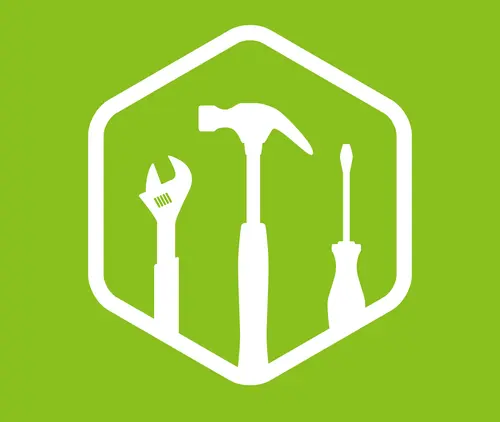

Welcome to Cordero
Entrepreneur Day
Youth Speak Forum.
Join us for the grand Youth Speak Forum, where we share ideas and projects to promote entrepreneurship Thursday 7pm
more info...
Weather
°F
Partly Cloudy
Wind Speed: 12 mph
Wind Chill:
Sports activities on the occasion of the 44th anniversary
On the occasion of the 44th anniversary of the creation of the Cordero GD Víctor Anselmo Fernández Escoba National Guard Training School, sports activities were carried out. Among the activities to highlight were the Thirty-seventh Intercompany Games, where the disciplines of softball, futsal, kickingball, volleyball and 8k marathon were played. The acts were chaired by the GB Hernán Dionisio Rincón Paz, director of the school, together with Edward Sarmiento, deputy director of the house of studies.
Discover how to join the chamber of commerce and how it will benefit your organization!
Ferreteria la Minita C.A.
"Everything for construction."
ferreminita@gmail.com +58 (414) 704 0789Farmacia Leydicar
"Your well-being is our priority"
farmaleydicar@gmail.com +58 (276) 396 1714El Merendero
"We take care of your food, we take care of you."
elmerendero@gmail.com +58 (424)782 0465